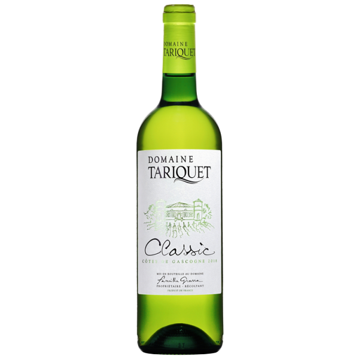

Nos produits :
CLASSIC 2021 - DOMAINE TARIQUET
Vin blanc
Année : 2021
10,5 % vol
0,75 L
Le domaine Tariquet a réussi à proposer un vin de tous les instants ! A l'apéritif, sur un repas, en
famille,
entre amis...
Chaque gorgée dégustée est une véritable explosion de fruits (d'agrumes), accompagnée d'une agréable fraîcheur
qui fera appel à une nouvelle gorgée. Le conseil de nos sommeliers : avoir toujours une bouteille au frais...
au cas où !

HARMONIE DE GASCOGNE BLANC 2022 - DOMAINE PELLEHAUT
Vin blanc
Année : 2022
11 % vol
0,75 L
Complexe et plein d'expression, cet Harmonie de Gascogne blanc est délicieusement bon!
Dans une robe limpide et brillante, le vin offre un nez plein de senteurs sur des notes de fleurs, de fruits
mûrs et de fruits confits. L'attaque est franche pour une bouche souple et suave, très équilibrée et
persistante. Ce millésime révèle une intensité et une concentration sans égale!
L'ÉCLAT 2021 - DOMAINE DE JOŸ
Vin blanc
Année : 2021
11,5 % vol
0,75 L
L'Éclat du domaine de Joÿ est un vin de plaisir immédiat à déguster sur sa jeunesse, pour le plaisir
de la fraîcheur et du fruité !
La cuvée l'Éclat offre une robe pâle aux reflets verts. Le nez frais et fruité présente des notes d'agrumes
(pamplemousse, citron) et de fruits exotiques (litchi). En bouche, le vin est frais, rond et se termine sur
des notes délicieusement fruitées. L'Eclat du domaine de Joÿ est un vin de plaisir à boire jeune, entre amis,
à l'apéritif, sur des fruits de mer et crustacés, des poissons grillés, du Comté, des fromages de chèvres
frais !

MONTAGNE NOIRE 2021 - CHATEAU AUZIAS
Vin rouge
Année : 2021
13,5 % vol
0,75 L
Pour les amateurs de valeurs sûres : ce rouge du Languedoc multi-récompensé à petit prix est fait pour
vous !
Des amis qui débarquent à l’improviste ? Une envie de s’ouvrir un bouteille de rouge, comme ça, juste pour le
plaisir d’accompagner un morceau de fromage et un peu de charcuterie ? Avec Montagne Noire du Château d’Auzias
on a tout bon ! Ses notes de fruits noirs et d’épices délicates agrémentent à merveille ce petit vin rouge du
Languedoc au rapport qualité-prix-plaisir imbattable ! Foncez !

UBY BYO ROSE N°26 2021 - DOMAINE UBY
Vin rosé
Année : 2021
11,5 % vol
0,75 L
Découvrez la gamme Byo du domaine Uby à travers ce délicieux rosé !!
L'intégralité du vignoble d'Uby est certifié Viticulture Raisonnée Contrôlée depuis 10 ans et les vignes
issues de l'agriculture biologique représentent 70 hectares du domaine. Cette cuvée rosée de la gamme Byo est
un vrai régal... Avec des notes de framboise, de groseilles, le vin dégage une grande fraîcheur avec une
bouche grasse et ample sur une délicieuse finale de fruits frais... Une pure gourmandise !